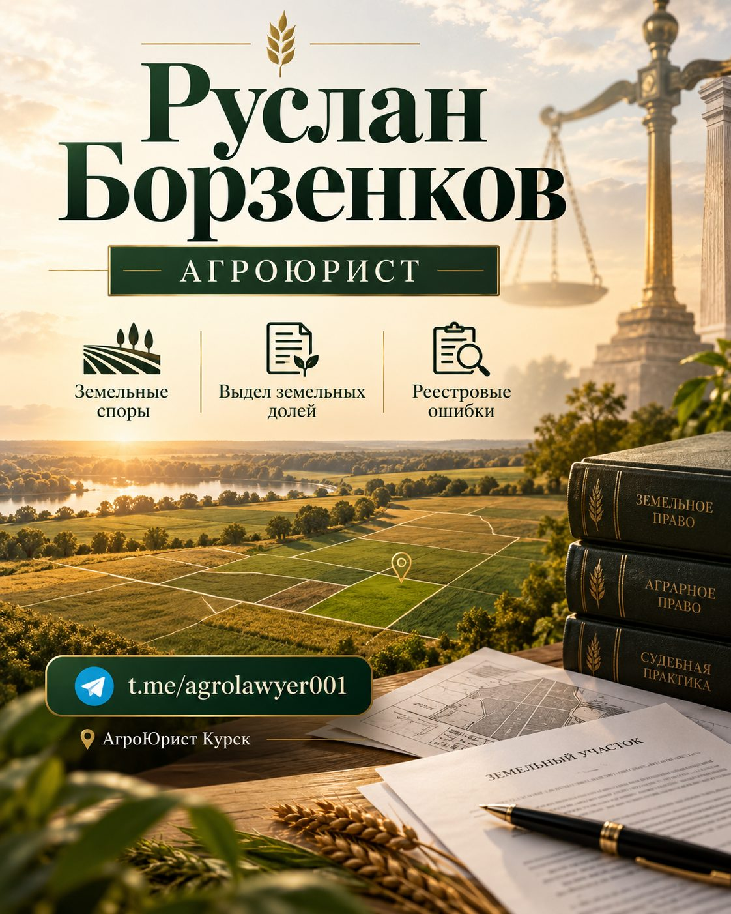

Телефон, WhatsApp, почта и Telegram — отвечаю в течение рабочего дня.
Позвонить: +7 (951) 315-80-04WhatsAppОтвечаю в течение рабочего дня. Срочный вопрос — звоните или пишите в WhatsApp.
Для документов и договоров — присылайте файлы, разберу и отвечу с комментариями.
Короткие разборы законов и схемы споров — канал веду лично.
Пн–Сб с 9:00 до 19:00
г. Курск. Приём по записи — уточните время при звонке. Выезжаю и на поля: акт обмера, осмотр участка, спор о границах решаются на месте быстрее.
Сохраните контакт одним касанием — визитка всегда под рукой.
